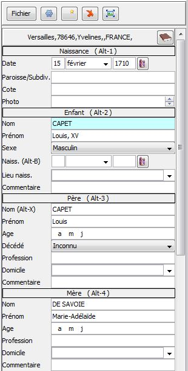
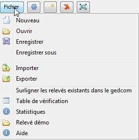

Relevé
Auteurs : Michel Pujol
Cet outil est destiné à saisir les actes en masse lors du dépouillement des registres communaux ou notariaux.
Il est conçu pour faciliter la saisie des données et contrôler au fur et à mesure leur cohérence.
Description générale
Les données sont enregistrées par commune.
un fichier = une commune
L'outil est composé de :
-
Cinq tables qui donnent une vue d'ensembles des relevés (voir Utilisation des tables)
- la table des naissances
- la table des mariages
- la table des décès
- la table des actes divers tels que les publications de mariage, contrats de mariage, testaments, quittances, etc
- la table récapitulative de tous les relevés
- Un éditeur qui permet de créer ou modifier les relevés. (voir Utilisation de l'éditeur)
- Un menu d'enregistrement des données dans des fichiers (voir gestion des fichiers)
- une fonction de copie des relevés vers un fichier gedcom (voir Copie des relevés dans un fichier Gedcom)
- un outil de recherche des noms ou prénoms présents dans les relevés.
Premiers pas
Pour faire les premiers pas, il est possible d'utiliser un exemple de données fourni avec l'outil.
Cliquer sur le bouton Fichier > Relevé démo.
Un nouveau relevé est créé avec des exemples de données qu'il est possible de modifier.
Tables des relevés
Les relevés sont classés dans cinq tables : Naissance ,
Mariage, Décès, Divers et la table récapitulative des relevés.
Chaque table est affichée dans un onglet. Pour voir le contenu d'une
autre table, cliquer sur l'onglet correspondant.
Voir le détail d'un relevé
Cliquer sur une ligne du relevé dans la table avec le bouton gauche de
la souris et le détail du relevé est affiché dans l'éditeur
présent à droite de la table.
Tri des colonnes
Cliquer sur le titre du colonne avec le bouton gauche de la souris pour
trier
la table par ordre alphabétique ou par ordre de date suivant le
type de la colonne.
Déplacement latéral des colonnes
Cliquer sur le titre du colonne avec le bouton gauche de la souris et déplacer latéralement la souris en
maintenant le bouton enfoncé.
Editeur de relevés
L'éditeur de relevé affiche les données complètes de chaque relevé du registre
|  |
Création d'un relevé
Pour créer un nouveau relevé, sélectionner l'onglet du type de relevé souhaité et cliquer sur le bouton
Suppression d'un relevé
Pour supprimer un relevé, sélectionner le relevé dans la table et
cliquer sur le bouton 
Les touches de déplacement
TAB (tabulation) pour passer au champ suivant.
SHIFT-TAB pour passer au champ précédent.
Remarque : La zone en cours d'édition apparaît en surbrillance (fond de couleur bleu).
|
Informations générales du registre
Pour renseigner les informations générales du registre cliquer sur le bouton
et saisir le nom de la commune ou de la ville :
Les touches de raccourci pour créer ou supprimer un relevé
Toutes les commandes de l'éditeur sont accessibles avec la souris ou
avec des touches "raccourci" du clavier. L'utilisation des touches de
raccourci est facultative. Cependant elle permet une saisie en masse
plus rapide en évitant
d'avoir à utiliser alternativement la souris et le clavier.
ALT-N pour créer un relevé de naissance.
ALT-M pour créer un relevé de mariage.
ALT-D pour créer un relevé de décès.
ALT-V pour créer un relevé divers.
ALT-S pour supprimer le relevé courant.
Les touches de déplacement rapide
ALT-1 Date
de l'événement
ALT-2 Individu ou intervenant N°1
ALT-3 Père
ALT-4 Mère
ALT-5 Epouse ou intervenant N°2
ALT-6 Père
ALT-7 Mère
ALT-8 Témoins
ALT-9 Commentaire général
Les touches d'aide à la saisie et la touche d'annulation
ALT-X : copie le nom de l'individu dans le champ du nom du père de l'individu.
ALT-Y : copie le nom de l'épouse dans la champ du nom du père de l'épouse
ALT-B : copie la date de l'évènement du relevé dans la champ de la
date de naissance de l'individu.
ALT-=: copie le valeur de même champ de l'enregistrement précédemment saisi.
Ce raccourci est particulièrement utile quand les témoins sont les mêmes d'un acte à l'autre par exemple.
ESC (Escape)
: Annule la saisie d'un champ tant que le champ est en cours de saisie
et retrouver la valeur d'origine tant que la zone est en cours de
saisie.
ALT-Z : Annule les modifications faites précédemment après avoir quitté le
champ.
Attention :
la touche CTRL-Z habituellement utilisée pour cela ne fonctionne pas ici
. La recherche de solution est en cours.
Espace :
Taper un espace
en fin de champ pour refuser les autres termes proposés par la fonction
de complétion. Cet espace est ensuite supprimé
automatiquement.
Par exemple s'il existe des prénoms composés commençant pas le prénom que
l'on est entrain de saisir, il faut taper un espace supplémentaire en
fin du premier prénom pour refuser les prénoms
secondaires proposés par la complétion.
Le deuxième éditeur
Cet
deuxième éditeur apparaît dans une fenêtre volante. Sa taille est suffisamment réduite pour être placé à
coté des photos des actes pour faire
la saisie en masse.
Pour ouvrir le deuxième éditeur, cliquer sur le bouton présent en tête du premier
éditeur.
Remarque : le deuxième éditeur contient lui aussi un bouton qui sert à faire apparaître le
premier éditeur au premier plan lorsque ce dernier est masqué par
d'autres fenêtres.
Fonctions contrôle et de mise en forme automatiques de l'éditeur
Alerte date de l'évènement et nom (ou prénom) absent.
Si la date et le nom ne sont pas
renseignés un message d'erreur est
affiché et avant de passer à un autre relevé. Il est conseillé de
compléter la donnée manquante pour éviter d'enregistrer sans ces
informations importantes.
Alerte sur doublon
Si
un relevé avec la même date, même nom et même prénom existe déjà, un
message d'alerte est affiché pour signaler un doublon possible.
Cette fonction peut être désactivée dans le panneau de configuration.
Alerte nouveau nom
Si un nouveau nom est saisi, un message d'alerte est affiché pour demander confirmation de ce nouveau nom.
Cette alerte permet en particulier d'éviter de saisir des orthographes
différentes et involontaires des noms couramment utilisés.
Cette fonction peut être désactivée dans le panneau de configuration.
Casse du nom
Le nom est
converti en majuscule au fur et à mesure de la saisie.
Casse du prénom
Les première lettres de
chaque prénom sont mises en majuscule au fur et à mesure de la saisie.
Casse de la profession
Le première lettre de la
profession est mise en majuscule au fur et à mesure de la saisie.
Suppression des espaces superflus.
Les espaces en début et en
fin de champ sont systématiquement supprimés quand la saisie d'un champ
est terminée.
Copie automatique du numéro de photo
Quand
un nouveau relevé est créé, le numéro de photo est renseigné
automatiquement par copie du numéro de photo du relevé précédemment
créé.
Cette fonction peut être désactivée dans le panneau de configuration.
Astuce : Le numéro de photo peut être facilement incrémenté en cliquant
sur les boutons qui apparaissent à droite du champ, ou en utilisant
les touches de direction HAUT et BAS.
Complétion des noms, prénoms , professions et lieux
Au fur et à mesure de la frappe d'un nom, des noms sont proposés
parmi ceux déjà existant dans le fichier de relevé. Lorsque le nom
souhaité apparaît, appuyer sur la touche Tabulation pour interrompre la
saisie en cours et passer à la saisie du champ suivant.
Cela évite d'avoir à saisir toutes les lettres d'un nom déjà connu.
Exclure des noms
Il est possible d'exclure des noms des propositions de complétions avec l'option Exclure des noms dans le panneau de configuration.
Complétion avec le gedcom courant
Il est possible d'ajouter les noms présents dans un fichier
gedcom à la liste des noms proposés par la fonction de complétion en
activant l'option Complétion avec le gedcom courant dans le panneau de configuration.
Quand cette option est activée, l'aide
à la saisie utilise les noms, prénoms et professions du fichier Gedcom
courant pour compléter les mots au fur et à mesure de la saisie.
Cette option est utile en particulier quand on commence un relevé et
qu'il y a encore peu de termes disponibles pour la complétion de la
saisie parmi les relevés eux-mêmes.
Quand cette option est désactivée, la complétion utilise seulement les
mots présents dans les relevés déjà saisis.
Remarque : Il est préférable de choisir un gedcom contenant des données
d'un lieu et d'une date proche des relevés à saisir pour que la
complétion puisse proposer des données semblables à celles qui doivent
être saisies.
Masquer les champs inutilisés de l'éditeur
Il est possible de masquer les champs inutilisés dans l'éditeur en l'indiquant dans l'option Choix des lignes à afficher dans l'éditeur de relevé.
Les fichiers
Les relevés sont enregistrés dans un fichier.
|  | Pour afficher le menu de gestion des fichiers, cliquer sur le bouton Fichier.
ATTENTION : Le menu Fichier du menu principal d'ANCESTRIS ne permet pas d'ouvrir ou enregistrer les fichiers de relevés. |
Nouveau
Crée un nouveau relevé. Les données qui pourraient être déjà présentes sont effacées de la mémoire.
Le nouveau relevé est appelé "nouveau" par défaut.
Ouvrir
Ouvre un fichier présent sur un disque et charge les données en mémoire à la place de celles déjà présentes.
Remarques:
- Les différents formats de fichiers sont reconnus automatiquement. (format ANCESTRIS, format EGMT ou format NIMEGUE )
- Si
le chargement détecte des lignes ne respectant pas un format de fichier
connu alors un message d'erreur est affiché en indiquant la liste des
lignes erronées.
Enregistrer
Enregistre les données dans un fichier au format ANCESTRIS sur un disque.
Si le relevé a déjà été enregistré une première fois, les données sont enregistrées dans le même fichier.
Si c'est la première fois que le fichier est enregistré, un nom de fichier est d'abord demandé.
Enregistrer sous
Demande un nouveau nom de fichier et enregistrer les données dans ce nouveau fichier au format ANCESTRIS.
Importer
Importe
les données d'un autre fichier en les ajoutant aux données déjà
présentes en mémoire. Cela permet de fusionner le fichier importé avec
le fichier déjà ouvert .
Remarque : toutes les données en mémoire doivent concerner la même commune.
Si des relevés du fichier importé concernent une commune différente, il
est proposé soit d'ignorer les relevés soit de remplacer leur commune par la
commune des données en mémoire.
Exporter
Exporte les données dans un fichier au format EGMT ou format NIMEGUE.
Il faut préciser :
- le format du fichier d'export ( format EGMT ou format NIMEGUE.)
- le type des relevés à exporter ( Naissances , Marriages, Décès, Divers ou tous les relevés)
- le nom du fichier d'export.
Surligner les relevés existant dans le gedcom
Surligne en rouge les relevés existant dans le fichier gedcom courant ouvert dans Ancestris.
Statistiques
Affiche le nombre de relevés présents dans le fichier.
Table de vérification
Affiche une table avec toutes les données contenues dans le fichier.
Relevé démo
Charge d'un fichier de démonstration et affiche ces relevés.